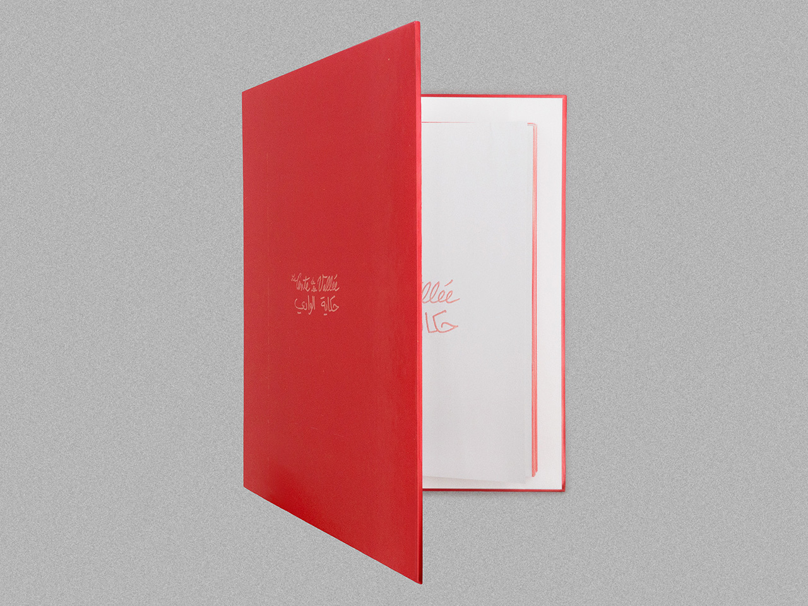

À l’origine de ce projet est un album de 23 photographies argentiques que j’avais prises en été 2002, quand j’avais 10 ans, dans la Vallée Qadisha dans le Liban-Nord.
J’ai initié la production de ce manuscrit par un protocole de création qui interdisait le passage par un ordinateur personnel. De cette façon, j’ai utilisé une photocopieuse pour faire la reproduction et la mise en page des photographies. J’ai ensuite relié les tirages xérographiques en monochrome rouge à la main en utilisant la technique leporello.
Vue du manuscrit.
Détail du manuscrit.
Vue du manuscrit.
Vue du manuscrit.
Détail du manuscrit.
Détail du manuscrit.

Vue de l'abum photographique.